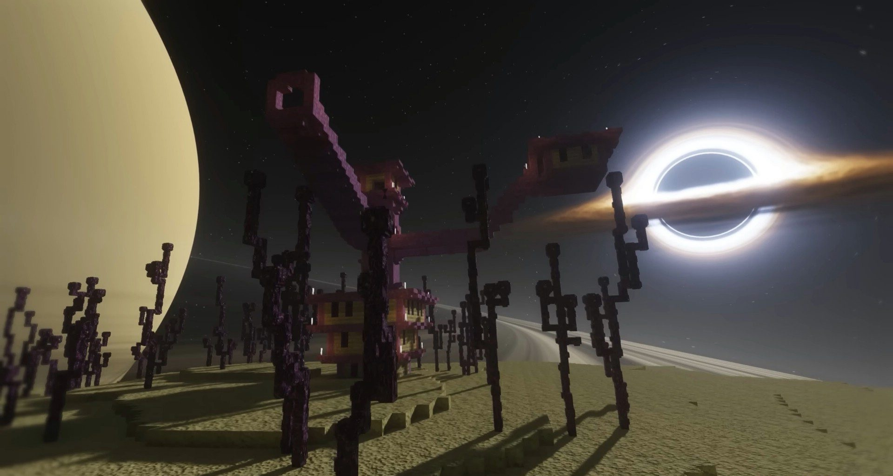
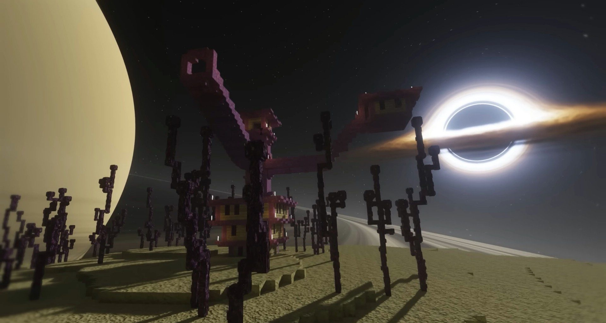

What Are Minecraft Shaders?
- Minecraft shaders are modifications that improve the game's graphics by adding realistic lighting, shadows, reflections, and other effects.
- Minecraft shaders often require a mod to run such as Optifine, Iris, Sodium, etc.
Top best Minecraft shaders for 1.21.x
Complementary shaders
- Complementary Shaders is a shader pack for Minecraft Java Edition with exceptional attention to detail, high standards of quality, and top-tier optimisation.
- When using this shader you can use 2 styles: Unbound and Reimagined.
Compatible versions: 1.16.x 1.17.x 1.18.x 1.19.x 1.20.x 1.21.x


IterationT
IterationT Shaders is an impressive shader pack that introduces a host of atmospheric enhancements. This shader pack can give your Minecraft hyper-realistic graphics. To truly appreciate its beauty, you’ll need a high-performance computer and a powerful graphics card.
Compatible versions: 1.20.x 1.21.x


 

Bliss shaders
- Bliss is a highly customizable shader. This shader pack also features a dynamic sky that changes every day which looks so pretty.
Compatible versions: 1.19+